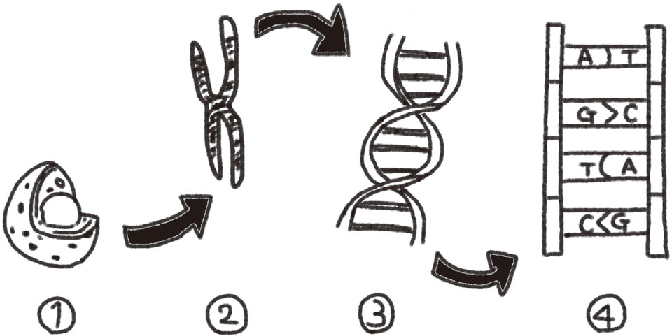

大家在生活中有接触过双胞胎或三胞胎吗？一般情况下，同卵的双胞胎不仅容貌、个性，连对疾病的易感性都十分相似。这是由于他们有相同的基因，因此各种特性极为相似。但是，不同卵的双胞胎、三胞胎或不是双胞胎的人，看上去差别比较明显。这似乎是一件很正常的事情，不过仔细想一下，还是会觉得有些不可思议。
孩子长得像父母，是因为他们有来自父母的遗传基因。而且孩子身上的基因，一半来自父亲，另一半来自母亲 ，相当于一个基因组合体。所以孩子通常眼睛像父亲、嘴巴像母亲，或外表像父亲、性格像母亲……那么，为什么同父同母的兄弟姐妹的外表、性格相差很大呢？如果每个孩子都继承了父母各一半的基因，那他们的基因不是应该相同吗？
为了解开这个谜团，我们有必要考虑一下所谓遗传因子各占一半的组合体具体是什么。首先要告诉大家，“一半一半”的组合方式有着令人难以置信的、庞大的可能性 ，而这与孩子的个性有着密切的联系。
接下来，我们了解一下基因是如何进行组合的。人体的遗传信息（与生长发育、遗传和变异有关的信息）的载体统称为“染色体组 ”。例如，一个人之所以是自己而不是别人，就因为他的染色体组有别于他人。
染色体组中的单体是“染色体”。染色体形如毛毛虫，又细又长。如果将它们放大，仔细观察其结构就会发现，它们之间是由像毛发一样的、细细的线状物质紧密相连的，这些线状物质就是脱氧核糖核酸（deoxyribonucleic acid，简称DNA） ，DNA具有存储生物遗传信息的功能。DNA是由四种被称为“碱基”的物质像锁链一样连接在一起的，而这些碱基的排列顺序就是DNA中的遗传信息。人类染色体组的构造如图4-2所示。

图4-2 人类染色体组的构造
其各组成结构如下：
①细胞核。人类的细胞核中有23对（46条）染色体。
②染色体。DNA在染色体中呈折叠状态排列。
③DNA。上面的碱基对如梯子般彼此相连，整体呈双螺旋结构。
④碱基对。人类的碱基对（鸟嘌呤［G］和胞嘧啶［C］、腺嘌呤［A］和胸腺嘧啶［T］）约有30亿对，记录了海量的遗传信息。
如果将人类1个体细胞核中所有的DNA连接起来，大约有2米长。如果这些DNA不折叠起来，细胞核中根本无法容纳。因此，DNA被分在一个个染色体中，折成小单位。人类体细胞的细胞核中一共有46条染色体 ，它们两两成对，构成23个染色体组 。
成对的两条染色体被称为“同源染色体” 。同源染色体有着相同的基因位点。也就是说，它们中记录的遗传信息是成对的。当人体受到化学物质或放射性物质的影响时，如果其中一条染色体受到损害，只要它的同源染色体无恙，人的身体机能就不会下降。讲得再明白点就是，细胞中的DNA有时会受到化学物质或放射性物质的损害，但由于同源染色体有着相同的机能，并且碱基的排列也非常近似，所以如果一方受到损害，另一方会迅速修复它 ，这就是所谓的“同源重组”（又称基因转换） 。换句话说，人体因为有同源染色体，才减少了遗传基因的变异，保障了个体的生存。
同源染色体还有一个非常重要的作用：让出生的孩子在染色体组上有多种可能性 。每个人的生命都始于受精卵，受精卵是父亲的精子和母亲的卵子结合的产物。精子和卵子与人体的其他细胞（体细胞）不同，它们各自只有23条染色体。由于孩子和父母一样，体细胞中必有46条染色体，而精子和卵子各带23条染色体，所以受精卵中就有46条染色体了。前后的数量是一致的。
人体在产生精子或卵子的时候，会从原有的46条染色体中选出23条。因此，23对同源染色体中的每一对都会被随机选出一条，共同构成一个包含23条染色体的染色体组合。
那么问题来了，受精卵中的染色体组合的构成方式一共有多少种？请大家在继续阅读下文之前，先思考一下这个问题。
首先，我们考虑一下母亲方。从一对同源染色体中选出一条染色体的方法只有2种，而同源染色体共有23对，因此全部的选取方法共有“2（从第一对中选的方法数）×2（从第二对中选的方法数）×…×2（从第23对中选的方法数）”，如果用科学计数法表示，共有223 种，也就是8388608种。
由于孩子的基因有一半来自父亲，所以父亲方也要考虑。父亲方的染色体选择方式与母亲方是一样的，也有223 种，即8388608种。那么精子和卵子结合后形成的受精卵中的染色体组合有多少种呢？计算方法是将从父亲那里继承来的223 种染色体组合和从母亲那里继承来的223 种染色体组合再进行组合，也就是：
223 ×223 ＝246 ＝8388608×8388608＝70368744177664.
想不到种类竟然居然超过了70万亿。
但是，现在下结论为时太早。一对夫妻生出的孩子的染色体组绝不仅仅有70万亿种可能性，而是比这个数大得多。正如上文提到的，精子和卵子结合后形成的新同源染色体，会因为前面提到的同源重组（或称基因转换）而交换一部分碱基序列，产生和父母中任意一方都不同的碱基排列 。虽然同源染色体上基因的碱基排列彼此相似，但并非完全一样，有一部分是不同的。所以，通过交换会出现和父亲母亲都不同的碱基排列。尽管同源重组通常用于修复受损的基因，但在传宗接代时，在增加染色体组合的多样性方面也是非常活跃的。
综上所述，孩子染色体组的模式可以用“无限”来形容，正因为如此，才保证了生物遗传基因的多样性。当我们将生物看作一个体系时，会觉得它真的非常完美。
人类在开发程序时，那些方式极简却能满足特定要求的设计，往往被认为是优秀的。生物的同源基因体系同时满足了“抑制基因突变”和“确保遗传多样性”的双重要求，如此完美的设计简直让所有的技术人员和程序设计师佩服得五体投地。大自然才是最伟大的老师！